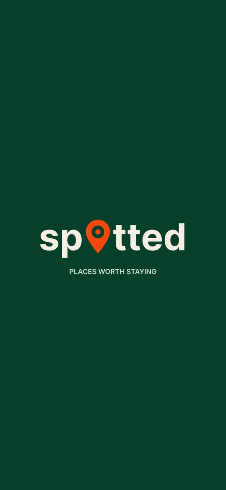
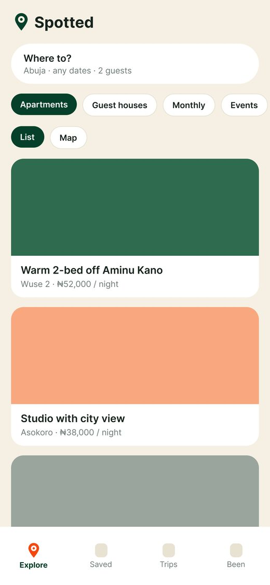
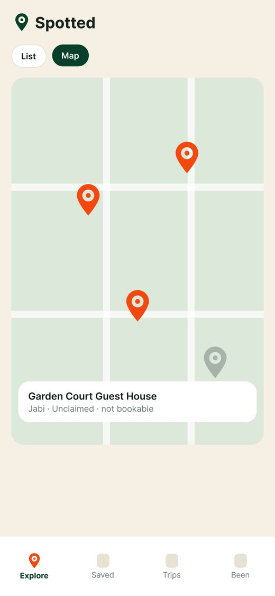
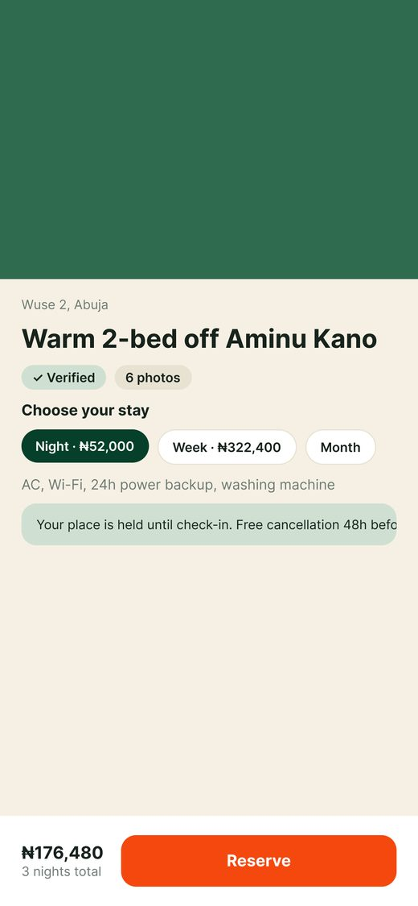
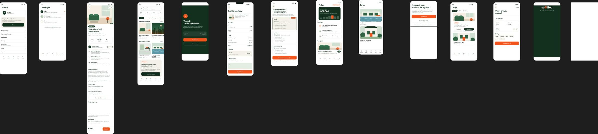

Spotted
A mobile app concept for finding verified places to stay in Abuja.
The idea
Many good apartments and guest houses in Abuja are hard to find online because they have no website and no listing on the big booking sites. Spotted brings them into one app, with list and map views, nightly, weekly and monthly stays, and a verified badge.




Design decisions
Warm and local
Deep green, cream and an orange pin give the app a friendly, place-based feel, unlike the cold blue of most booking apps.
Honest map
Places whose owners haven't joined yet appear in grey and are marked "Unclaimed, not bookable", so the map stays useful while hosts are onboarded.
Clear before booking
The listing lets guests pick a night, week or month, shows the total, and states the cancellation terms next to the Reserve button.
The full flow
Explore, listing, checkout, trips, saved places, messages, host dashboard and profile, in Figma. Scroll sideways to see all screens.
